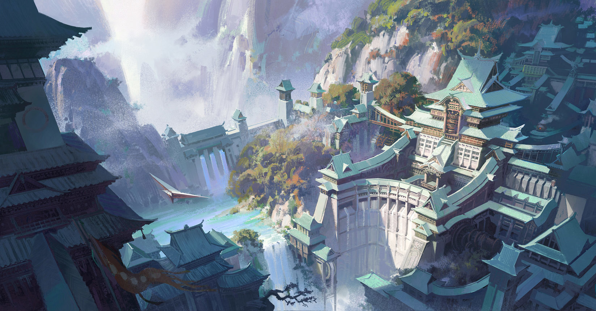

Seznam větších a důležitých měst v Říši Hwaža, seřazené podle komandérií, které jsou seřazené podle počtu obyvatel.
Komandérie Lia
Šweizen
Aaaaaa
Komandérie Jilin
Jilin
Aaaaaaaaaaaa
Komandérie Yišan
Sailao
Æn
Hwažayi Dovayiguo
Hazi Ambagurun
Jazyk: Hwažayi Yuyiyan
Populace: ~25 000 000
Etnické složení:
Administrativní členění
5 Komanderií (Šanbiŋ, Fuman, Lia, Honreŋ, Miao)
Typ vlády: Absolutní monarchie
Placeholder
avatar
Seznam větších a důležitých měst v Říši Hwaža, seřazené podle komandérií, které jsou seřazené podle počtu obyvatel.
Aaaaaa
Aaaaaaaaaaaa
Æn